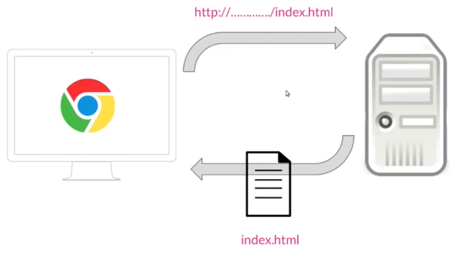

Fundamentos de HTML

Definición de HTML5
HTML5 es un estándar que sirve como referencia del software que conecta con
la elaboración de páginas web en sus diferentes versiones, define una
estructura básica y un código (denominado HTML) para la definición d
contenido de una página web, como texto, imágenes, vídeos, juegos, entre
otros…
Funcionamiento HTML5
El proceso es el siguiente:
Desde el navegador se realiza una petición a un servidor, lo que se hace a través de unadirección del tipo http://..../index.html. Después el servidor recupera de su disco duro
esa página, la devuelve al navegador y la página se muestra.